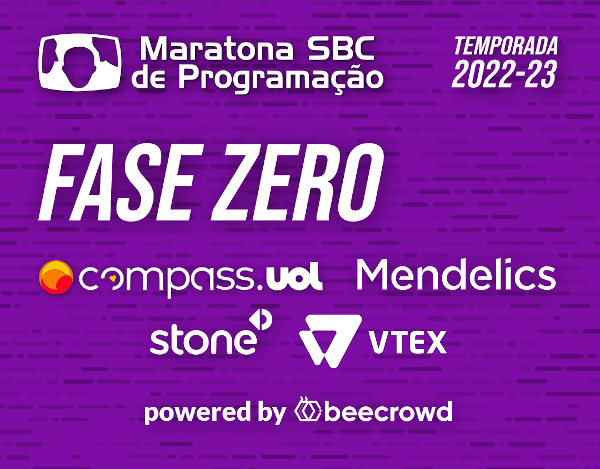

<!doctype html>
<html lang="pt-BR">
  <head>
    <meta charset="utf-8">
    <meta name="viewport" content="width=device-width, initial-scale=1">
    <title>Maratona SBC de Programação</title>
    <link rel="shortcut icon" type="image/x-icon" href="../../../favicon.ico">
    <link href="https://cdn.jsdelivr.net/npm/bootstrap@5.2.2/dist/css/bootstrap.min.css" rel="stylesheet" integrity="sha384-Zenh87qX5JnK2Jl0vWa8Ck2rdkQ2Bzep5IDxbcnCeuOxjzrPF/et3URy9Bv1WTRi" crossorigin="anonymous">
    <script src="https://cdn.jsdelivr.net/npm/bootstrap@5.0.2/dist/js/bootstrap.bundle.min.js" integrity="sha384-MrcW6ZMFYlzcLA8Nl+NtUVF0sA7MsXsP1UyJoMp4YLEuNSfAP+JcXn/tWtIaxVXM" crossorigin="anonymous"></script>

    <script type="text/javascript" src="https://cdnjs.cloudflare.com/ajax/libs/mathjax/2.7.0/MathJax.js?config=TeX-AMS_HTML"></script>
    <script type="text/javascript" src="../../../maratona.js"></script>
    <script type="text/javascript" src="../../contest.js"></script>
    <script type="text/javascript">
      //====================================================================================================
      // Atualizar as informações abaixo:
      // pageStart, organization, contestProblems, results [limiar_ok + supersedes], pageEnd
      //====================================================================================================
      let pageStart = `
<p>
  A <a href="https://www.beecrowd.com.br/judge/en/contests/view/683">1ª Fase Zero da Maratona de Programação da SBC</a> ocorreu em 24 desetembro de 2022, no <a href="https://www.beecrowd.com.br/">Beecrowd</a>, com <a href="https://www.youtube.com/watch?v=5AGEzvf0MwI">transmissão ao vivo no YouTube</a>, contando com o apoio de: Mendelics, VTEX, Compass, e Stone. Nosso sincero agradecimento a todos os apoiadores e a todos os que trabalharam para que o sonho da 1ª edição da Fase Zero da <a href="http://maratona.sbc.org.br/">Maratona de Programação</a> se tornasse realidade!
</p>
<p>
  A 1ª Fase Zero da Maratona de Programação também foi a 2ª Maratona de Programação do Sul e a 5ª Maratona de Programação do Norte. Inscreveram-se para a competição, gratuitamente, 341 times de 26 estados do Brasil.
</p>
<br>`;
      let organization = `
<p>
  Participaram da preparação da prova, escolha de problemas, resolução e testes as seguintes pessoas: Carlos Ferreira, Ciro Cirne Trindade, Edson Alves, Emílio Wuerges, João Lúcio Azevedo, Leandro Zatesko, Leonardo Deliyannis, Lucy Mari Tabuti, Neilor Tonin, Rosiane Freitas, e Weverton Cordeiro.
</p>`;
      let contestProblems= ['Avaliações de Algoritmos (autor: Neilor Tonin)',
                             'Baita Desafio Complexo (autor: Leandro Zatesko)',
                             'Chimambu (autor: Leandro Zatesko)',
                             'Ditados (autor: Neilor Tonin)',
                             'Eu Quero Cafééé (autor: Leandro Zatesko)',
                             'Falcatrua (autor: Leandro Zatesko)',
                             'Gostos Peculiares (autor: Leandro Zatesko)',
                             'House of Cards (autor: Edson Alves)',
                             'Infinita String de Dígitos (autor: Edson Alves)',
                             'José e a Súmula (autor: Ciro Cirne Trindade)',
                             'Kimi Räikkönen (autor: Ciro Cirne Trindade)',
                             'La Chaleur (autor: Leandro Zatesko)'];
      let results = listLinks([['contest/Score.html', 'Placar final']]) + `
<p>
  Os quatro melhores times no placar geral foram:
</p>
<ol>
  <li>Você beijaria Matheus Leal Viana (UNICAMP) <b>[Campeão da 1ª Fase Zero da Maratona de Programação da SBC]</b></li>
  <li>Humuhumunukunukuapua'a (UFMG)</li>
  <li>é isso aí (UFRJ)</li>
  <li>A ascensão e queda do buldogue francês (UFCG)</li>
</ol>
<p>
  Os quatro melhores times da 5ª Maratona de Programação do Norte foram:
</p>
<ol>
  <li>Knuth Knights (UFAM) <b>[Campeão da 5ª Maratona de Programação do Norte]</b></li>
  <li>Shine like A* (UFAM)</li>
  <li>Obrigado Lulu! (UFAM)</li>
  <li>Você é fraco, te falta O(1) (UEA)</li>
</ol>
<p>
  Os quatro melhores times da 2ª Maratona de Programação do Sul foram:
</p>
<ol>
  <li>Como treinar o seu João (UDESC) <b>[Campeão da 2ª Maratona de Programação do Norte]</b></li>
  <li>Jump and Link to the Past ⚔ (UFPR)</li>
  <li>Bolonhesa (UFSC - Florianópolis)</li>
  <li>Tropa dos Calvos (UFRGS)</li>
</ol>`;
      let perUF= [['Acre', ['Inimigos do C (UFAC)', 'If () {Sem Condição} (UFAC)']],
                  ['Alagoas', ['Geração EAD Coda Y Coda (UFAL)']],
                  ['Amazonas', ['Knuth Knights (UFAM)', 'Shine like A* (UFAM)']],
                  ['Bahia', ['Monarcas dos Palpites (UFBA)']],
                  ['Ceará', ['AC(¬‿¬)WA (UFC)']],
                  ['Distrito Federal', ['RockLie não manda WA (UnB)']],
                  ['Espírito Santo', ['CSabeEssa? (UFES - CEUNES)']],
                  ['Goiás', ['As Cronicas de Goiáis: a tampinha, o farofeiro e o macaco-velho (UFG)']],
                  ['Maranhão', ['Orion Coders (IFMA)']],
                  ['Mato Grosso do Sul', ['NEYMARto Grosso DO SUUUULLL (UFMS)']],
                  ['Mato Grosso', ['Vamu Vense (UFMT)']],
                  ['Minas Gerais', ["Humuhumunukunukuapua'a (UFMG)"]],
                  ['Pará', ['3 tigres tristes (UEPA)', 'Deu a louca no Coach (UFOPA)']],
                  ['Paraíba', ['A ascensão e queda do buldogue francês (UFCG)']],
                  ['Paraná', ['Jump and Link to the Past ⚔️ (UFPR)', '🕴️ (UFPR)']],
                  ['Pernambuco', ['Desculpa, Beto (UFPE)']],
                  ['Piauí', ['Três caras numa bike (UFPI)']],
                  ['Rio de Janeiro', ['é isso aí (UFRJ)']],
                  ['Rio Grande do Norte', ['Segtreeste sem Malheiros (UFRN)']],
                  ['Rio Grande do Sul', ['Tropa dos Calvos (UFRGS)', 'cacetinho instanceof PãoFrancês (UFRGS)']],
                  ['Rondônia', ['Geradores de Bugs (IFRO - Campus Ariquemes)', 'Empty Coffee Cups (IFRO - Campus Porto Velho Calama)']],
                  ['Roraima', ['RandomSort (UFRR)']],
                  ['Santa Catarina', ['Como treinar o seu João (UDESC)', 'Bolonhesa (UFSC - Florianópolis)']],
                  ['São Paulo', ['Você beijaria Matheus Leal Viana (UNICAMP)']],
                  ['Sergipe', ['Fibolalic (COESI)']]];
      let girls = ['AsMeninasDoBairroDasPitangueiras (UnB)', 'Comprincesas (UNICAMP)', 'Bragiaki (MACKENZIE)'];
      let em = ['ceferno (CEFET-MG)', 'Fibolalic (COESI) <em>[melhor time de Sergipe]</em>', 'input("que pariu") (IFRS - Campus Vacaria)', 'Na minha máquina funciona (IFPB)'];

      let contestInfo = listLinks([['contest/Editorial.html', 'Editorial']]) + listProblems(contestProblems);

      let pu = '';
      for (uf of perUF) {
        pu += `<li>${uf[0]}\n${makeList('ol', uf[1])}\n</li>`;
      }
      pu = `<ul>${pu}</ul>`
      let awards = 'A seguir, a lista dos times que foram premiados de acordo com a Organização.\n' +
                   accordion('Awards', [['Times compostos apenas por meninas', makeList('ol', girls)],
                                        ['Times compostos apenas por estudantes do Ensino Médio', makeList('ol', em)],
                                        ['Por Unidade da Federação', pu]]);
    </script>
  </head>
  <body>
    <script type="text/javascript">
      document.write(bodyHeader(`Fase Zero (${thisYear()})`));
      document.write(pageStart);
      document.write(accordion('Phase', [['Organização', organization],
                                         ['Prova', contestInfo],
                                         ['Resultados', results],
                                         ['Premiação', awards]
                                           ]));
      document.write(bodyFooter());
    </script>
  </body>
</html>